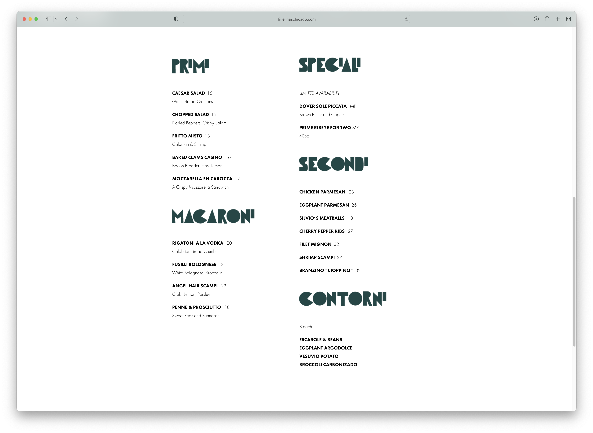
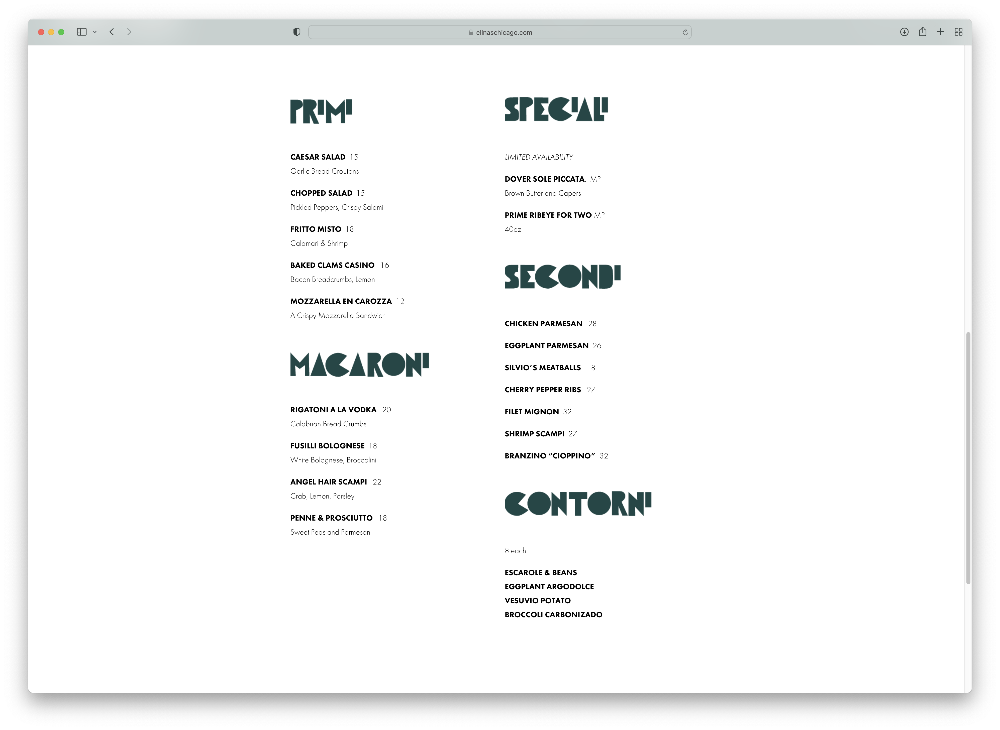

Final project proposal
Introduction
Bonta' Del Forno
Bonta' Del Forno is an Italian restaurant based in San Luis Obispo since 2020, specializing in authentic Italian cuisines from seafood to pizza and everything in between. Working with the freshest ingredients, imported pasta and top quality cuts of meat, we take pride in the dishes we serve with love.
Target audience
The target audience includes people who enjoy authentic Italian food, anyone who has an occasion to celebrate, and upper income level families or individuals who are willing to spend their money on good dining and service.
Bonta' Del Forno aims to provide optimal customer service and an unforgettable dining experience. We want to promote Italian culture and share our love for authentic Italian cuisine, one dish at a time.
Comparative analysis
Pastaria


Caruso's Grocery


Elina's
 

Website content
Home
Welcome to Bonta' Del Forno. At our restaurant, everything is made with unparalleled freshness. Hearty sauces, flavorful soups, tasty dressings and delectable desserts are handmade every day at every restaurant in open-air kitchens. Nothing is ever microwaved or packaged—our chefs prepare each and every dish to order. That’s what fresh means to Bonta' Del Forno, and that's why here, fresh means everything.
[The inside of our San Luis Obispo restaurant.]
Menu
Antipasti
-
Bruschetta al pomodoro fresco e basilico
Grilled garlic bread, roma tomatoes, basil, and extra virgin olive oil
$14.99
-
Bruschetta ai funghi trifolati
Grilled garlic bread, sautéed local and imported mushrooms
$17.99
-
Involtini di melanzane alla parmigiana
Grilled eggplant rolled with mozzarella and Grana Padano cheese, baked with a lightly spicy tomato sauce
$17.99
-
Polpettine di Anatra e Tacchino
Duck and turkey dumplings, onion confit marmalade
$17.50
-
Carpaccio del Monte Bianco
Raw beef filet, arugula, Grana Padano cheese, and celery root, horseradish mustard dressing
$22.75
-
Molluschi al guazzetto
Manilla clams, black mussels, lightly spicy tomato sauce
$24.50
Insalata
-
Insalata di Mare
Sauteed shrimps, sea scallops, clams and mussels, organic arugula, roasted bell peppers, capers and garlic in a lemon mustard dressing
$24.75
-
Insalata di Parma
Arugula, red apples, walnuts, roma tomatoes, balsamic dressing, Grana Padano cheese on imported prosciutto
$22.50
-
Insalata del Dante
Baby spinach, roma tomatoes, pine nuts, red onions and gorgonzola cheese dressing
$19.75
-
Caprese
Mozzarella, roma tomatoes, red onions, capers, basil and extra virgin olive oil
$17.50
-
Insalata Bufala
Arugula, marinated eggplant, mozzarella, roma tomatoes, basil, capers and red wine vinaigrette dressing
$19.75
-
Carciofi ai petali di parmigiano
Artichoke hearts, roma tomatoes, petals of Grana Padano cheese and balsamic vinaigrette dressing
$19.75
Primi Piatti
-
Risotto del Cusio
Carnaroli rice with freshwater shrimp, porcini mushrooms, organic herbs and white wine and chicken broth
$28.75
-
Penne all’arrabbiata
Short tube pasta, garlic, Italian parsley and lightly spicy tomato sauce
$19.50
-
Spaghettini aglio olio e peperoncino
Spaghettini pasta, garlic, red peppers, Italian parsley and extra virgin olive oil
$18.75
-
Tagliolini dell’orto al pesto
Tagliolini pasta with julienne garden aromatic vegetables, new potatoes in home made pesto sauce
$21.50
-
Tortelloni di zucca alla salvia e mascarpone
Home made tortelloni stuffed with pumpkin and ricotta cheese with sage, mascarpone sauce and walnuts
$23.75
-
Orecchiette del campo
Hat shaped pasta with home made chicken sausages, rapine, sun dried tomatoes, garlic and tomato basil sauce
$21.75
Secondi Piatti
etc.
Dessert
etc.
[Table with a seafood dish and a glass of wine.]
About
Bonta' Del Forno is an Italian restaurant based in San Luis Obispo since 2020, specializing in authentic Italian cuisines from seafood to pizza and everything in between. Working with the freshest ingredients, imported pasta and top quality cuts of meat, we take pride in the dishes we serve and prepare them with love.
[Spaghetti and pizza on a table.]
Location
You can find us at 849 Monterey St in San Luis Obispo, CA 93401. We are open daily from 11am to 10pm.
[Bonta' Del Forno's storefront.]